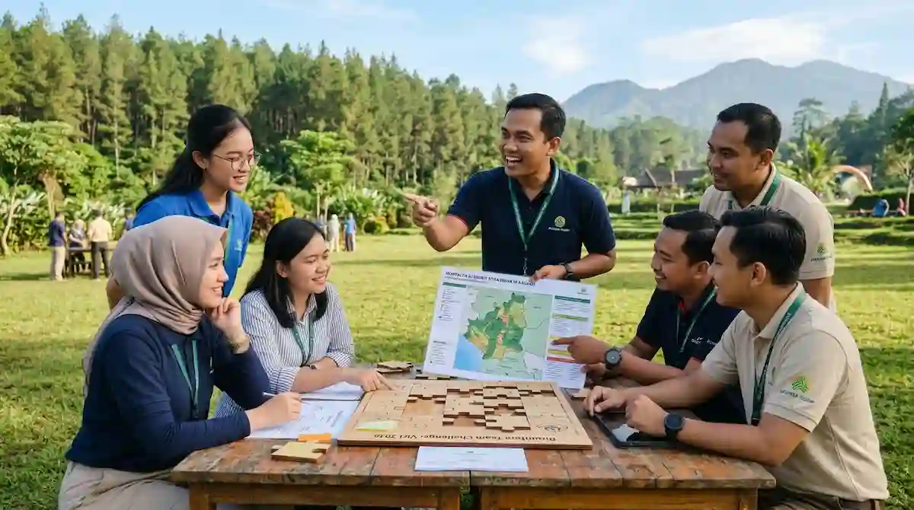

Mengapa Pemimpin Perlu Dilatih Lewat Pengalaman?
Banyak manajer naik jabatan karena kemampuan teknisnya, bukan karena pernah dilatih memimpin. Padahal memimpin menuntut keterampilan yang berbeda: mendengarkan, mendelegasikan, memberi umpan balik, dan mengambil keputusan di bawah tekanan. Keterampilan ini sulit dipelajari hanya lewat slide presentasi.
Outbound memberi ruang aman untuk mencoba. Dalam permainan, peserta menghadapi situasi yang menyerupai tantangan kerja, tetapi tanpa risiko bisnis yang nyata. Mereka bisa melihat langsung bagaimana gaya komunikasi memengaruhi hasil tim. Karena itu pelajarannya lebih melekat. Gambaran manfaat kebersamaan tim secara umum dapat Anda pelajari di artikel manfaat utama outbound team building bagi perusahaan di Malang.
Kompetensi Kepemimpinan Apa yang Bisa Dilatih?
Sebelum memilih permainan, tentukan kompetensi yang ingin ditingkatkan. Tabel berikut memberi gambaran hubungan antara kompetensi dan jenis aktivitas yang relevan:
| Kompetensi | Contoh Aktivitas | Hal yang Diamati |
|---|---|---|
| Komunikasi | Permainan instruksi satu arah dan dua arah | Kejelasan arahan dan cara mendengarkan |
| Pengambilan Keputusan | Simulasi dengan waktu dan sumber daya terbatas | Kecepatan dan ketepatan memilih strategi |
| Delegasi | Tantangan membangun dengan pembagian peran | Cara membagi tugas dan memercayai anggota |
| Motivasi Tim | Tantangan kelompok yang menuntut ketekunan | Cara menjaga semangat saat menghadapi kegagalan |
| Manajemen Konflik | Studi kasus dan diskusi kelompok | Cara menengahi perbedaan pendapat antaranggota |
Contoh di atas hanya gambaran umum. Rancangan sebenarnya dapat disesuaikan dengan tingkat jabatan, jumlah peserta, serta tujuan strategis perusahaan Anda.
Permainan Apa yang Cocok untuk Melatih Kepemimpinan?
Permainan yang baik memberi peserta kesempatan memimpin secara bergantian, bukan hanya satu orang yang selalu tampil menonjol. Beberapa pilihan yang sering dipakai antara lain:
- Tantangan Memandu Mata Tertutup: Melatih kejelasan arahan, rasa empati, dan kepercayaan penuh antaranggota tim.
- Membangun Struktur Bersama: Peserta harus menyusun rencana, membagi peran secara efektif, lalu mengeksekusinya dalam tenggat ketat.
- Simulasi Krisis: Mengondisikan situasi mendadak yang menuntut pengambilan keputusan cepat dan tepat dalam kelompok.
- Estafet Strategi: Menguji koordinasi, fleksibilitas berpikir, serta penyesuaian rencana di tengah jalan saat hambatan muncul.
- Rotasi Pemimpin: Memastikan setiap anggota mendapat giliran memimpin satu putaran permainan secara bergantian.
Ide permainan simulasi lainnya yang dapat dikembangkan tersedia pada artikel 7 rekomendasi game outbound team building seru di Batu Malang.

Bagaimana Menyusun Program Outbound Leadership?
Program yang efektif tidak berhenti pada keseruan permainan belaka. Susunlah alur program dalam tiga tahap utama:
- Tahap Pertama (Pembukaan): Menjelaskan tujuan pelatihan, kontrak belajar, dan menetapkan aturan main bersama.
- Tahap Kedua (Aktivitas): Berupa dua sampai empat permainan simulasi dengan tingkat tantangan yang bertahap.
- Tahap Ketiga (Refleksi): Fasilitator mengajak peserta mengekstrak pengalaman dan mengaitkannya dengan situasi kerja nyata di kantor.
Sesi refleksi inilah bagian yang paling menentukan. Tanpa refleksi, peserta hanya merasa senang bermain. Dengan refleksi, mereka menemukan pola perilaku sendiri—misalnya terlalu dominan atau terlalu pasif—lalu menyusun komitmen kecil untuk dicoba di tempat kerja. Pastikan menginformasikan jadwal, pakaian, dan perlengkapan sebelum hari pelaksanaan. Daftar lengkapnya dapat Anda cek di artikel checklist perlengkapan peserta outbound Batu Malang.
Bagaimana Memilih Fasilitator untuk Program Kepemimpinan?
Fasilitator program kepemimpinan perlu lebih dari sekadar kemampuan memandu permainan. Ia harus mampu membaca dinamika kelompok, mengajukan pertanyaan reflektif yang mendalam, serta menjaga suasana tetap aman agar peserta berani jujur mengakui kelemahan dan area pengembangannya.
Tanyakan pengalaman vendor dalam menangani peserta level manajerial, dan minta penjelasan tentang cara mereka mengaitkan simulasi permainan dengan tujuan strategis perusahaan Anda.
Berapa Lama Durasi dan Siapa yang Sebaiknya Ikut?
Program sehari penuh biasanya cukup untuk memperkenalkan dasar-dasar kepemimpinan. Bila tujuannya lebih mendalam, seperti membentuk calon pemimpin (management trainee) atau memperbaiki dinamika tim manajerial yang kompleks, pertimbangkan program dua hari atau rangkaian sesi bertahap yang diselingi waktu praktik langsung di tempat kerja.
Mengenai komposisi peserta, kelompokkan berdasarkan level jabatan yang seimbang agar diskusi terasa setara dan terbuka. Jumlah peserta yang terlalu besar membuat setiap orang kurang mendapat kesempatan memimpin, sehingga sebaiknya dibagi ke dalam beberapa tim kecil. Sampaikan jumlah dan latar belakang peserta kepada vendor supaya program dapat dirancang presisi sejak awal.
Bagaimana Menilai Hasil Outbound Leadership?
Lakukan penilaian dalam dua tahap berkala. Segera setelah acara selesai, kumpulkan kesan peserta serta pelajaran utama yang mereka catat. Beberapa minggu kemudian, minta atasan langsung atau anggota tim mengamati perubahan perilaku peserta di tempat kerja—misalnya dalam cara memberi arahan, mendelegasikan tugas, atau mendengarkan masukan tim.
Kesalahan Umum dalam Outbound Leadership
Agar pelatihan kepemimpinan berbasis pengalaman ini memberikan dampak nyata pada kinerja manajemen, hindari beberapa kesalahan umum berikut:
- Tidak menetapkan kompetensi spesifik yang dilatih, sehingga acara terasa seperti permainan rekreasi biasa.
- Hanya satu orang dominan yang memimpin, padahal peserta lain membutuhkan giliran untuk melatih diri.
- Mengabaikan atau memotong sesi refleksi, akibatnya esensi pelajaran tidak terbawa ke lingkungan pekerjaan.
- Tidak melibatkan atasan peserta, sehingga tidak ada dukungan atau pengawalan komitmen setelah acara.
- Tidak ada rencana tindak lanjut pasca acara, sehingga semangat perubahan berhenti di hari pelaksanaan.